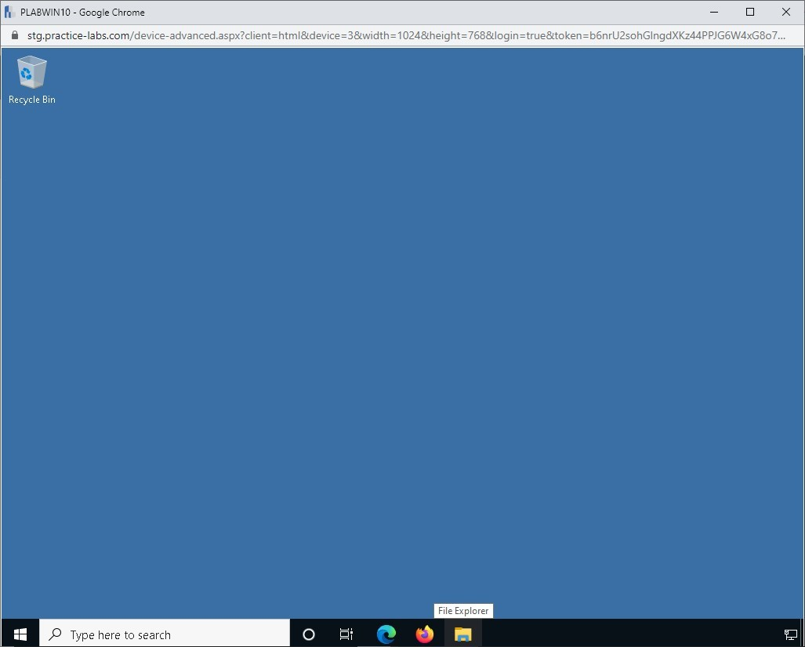

Introduction
9beca326-b493-4b0e-b3dc-d7dfb77df3c9
Welcome to the Later Phases of Incident Response Practice Lab. In this module, you will be provided with the instructions and devices needed to develop your hands-on skills.
dc640c20-9434-45ea-b7c2-6d4d6a196bfc
Learning Outcomes
In this module, you will complete the following exercises:
- Exercise 1 - Eradication and Recovery
- Exercise 2 - Post-incident Activities
After completing this lab, you will be able to:
- View a Sample Incident Response Report
After completing this module, you will have further knowledge of:
- Vulnerability Mitigation
- Sanitization
- Reconstruction/Reimaging
- Secure Disposal
- Patching
- Restoration of Permissions
- Reconstitution of Resources
- Restoration of Capabilities and Services
- Verification of Logging/ Communication to Security Monitoring
- Evidence Retention
- Lessons Learned Report
- Change Control Process
- Incident Response Plan Update
- Incident Summary Report
- Indicator of Compromise (IOC) Generation
- Monitoring
Exam Objectives
The following exam objectives are covered in this lab:
- 4.3 Given an incident, analyze potential indicators of compromise
Note: Our main
focus is to cover the practical, hands-on aspects of the exam
objectives. We recommend referring to course material or a search engine
to research theoretical topics in more detail.
Lab Duration
It will take approximately 1 hour to complete this lab.
89816a20-56f2-42c5-bfa0-46f11f2986ba
Help and Support
For more information on using Practice Labs, please see our Help and Support page. You can also raise a technical support ticket from this page.
Click Next to view the Lab topology used in this module.
d2c53300-f951-45a9-9aa4-3d4ecae69e11
Lab Topology
During your session, you will have access to the following lab configuration.

Depending on the exercises, you may or may not use all
of the devices, but they are shown here in the layout to get an overall
understanding of the topology of the lab.
- PLABDC01 - (Windows Server 2019 - Domain Server)
- PLABDM01 - (Windows Server 2019 - Domain Member)
- PLABKALI01 - (Kali Linux 2019 - Linux Kali)
- PLABWIN10 - (Windows 10 - Domain Member Workstation)
- PLABCENTOS - (Centos 8 Linux - Stand-alone Linux Server)
- PLABALIENVAULT - (Alien Vault Linux Security Management Platform)
Click Next to proceed to the first exercise.
<
Home |
README >
CompTIA Cybersecurity Analyst (CySA+) Practice Labs
Exercise 1 - Eradication and Recovery
After the threat has been isolated or contained, the
next steps are to eradicate the threat. Several tasks can be performed
to eradicate the threat(s). Not all tasks need to be performed at once.
Depending on the nature of the incident, one or more methods may be
used.
In this exercise, you will learn about the eradication and recovery methods.
Learning Outcomes
After completing this module, you will have further knowledge of:
- Vulnerability Mitigation
- Sanitization
- Reconstruction/Reimaging
- Secure Disposal
- Patching
- Restoration of Permissions
- Reconstitution of Resources
- Restoration of Capabilities and Services
- Verification of Logging/Communication to Security Monitoring
Your Devices
This exercise contains supporting materials for CySA+.

Vulnerability Mitigation
Attackers always look for vulnerabilities that they
can exploit. After an incident, it needs to be ensured that the
vulnerabilities are closed. They need to be patched with the required
patches and updates.
If an organization does not have a vulnerability
mitigation process in place, then it should develop one, after a threat
has been isolated or contained. The vulnerability mitigation method may
consist of one or more methods for handling vulnerabilities. For
example, one method can be patch management. The second method can be a
workaround in case an update or patch is not available for a specific
vulnerability. Hardening, for example, can be an alternate measure.
Vulnerability mitigation should be monitored
continuously. As and when new vulnerabilities are discovered, they
should be patched appropriately. The time frame for patching the
vulnerabilities depends on their criticality.
Sanitization
Sanitization refers to freeing a hard drive from any
kind of threat. The sanitization method differs between a hard drive and
solid-state drives. The hard drive, which is also known as a mechanical
hard drive, can be overwritten multiple times. When a hard drive is
overwritten multiple times, data that was present earlier in the hard
drive cannot be recovered.
The data overwriting method does not work well with
solid-state drives, which requires data to be securely erased. A
third-party or manufacturer-provided utility can be used to erase data.
Multiple methods can be used in sanitization:
Degaussing: The degaussing method uses an
electromagnet to wipe data and make the media useless. This makes it
impossible to recover any data. This is a method of physical
destruction.
Low-level Format: The low-level format works
slightly differently than a high-level format. It erases a disk entirely
and removes everything from the hard drive, including the sector
address table. It is virtually impossible to recover data from a low
level formatted hard drive. Once a low-level format is complete, the
hard drive is fresh for use.
Data Disposal: In the data disposal method, you
eliminate data stored on the hard drive in a manner that makes it
unreadable. Even with the use of a specialized tool, data cannot be
recovered.
Data Overwrite: Data overwriting is simply
deleting the old data and adding new data on the hard drive. The new
data keeps overwriting locations from where the old data has been
deleted.
Data Wipe: Data wipe overwrites the hard drive with 0 and 1 and ensures that the data cannot be recovered.
Cryptographic Erase: Cryptographic erase (CE)
is a method of eliminating the key pair or even the public key. The data
is useless on the hard drive after the key pair is eliminated. This
method, unlike the other mentioned methods, does not damage the drive or
its media, and drive can be further formatted and used.
Reconstruction/Reimaging
After a system has been sanitized, which means that
threat has been completely removed from the system, it must be re-used,
which can be done by rebuilding the system. To be able to do this, it
needs to be installed with an operating system, applications, and data
that should be added. If this system is a special-purpose system, such
as a Webserver, it needs to be configured properly. All these tasks are
performed manually, which can take a few hours to complete.
A better approach is to use images, which are
standardized and hardened. An organization can have images for desktops,
workstations, laptops, and servers. If a system goes down or crashes,
its relevant image can be deployed on the system to get it up and
running in a matter of a few minutes.
These images can be deployed manually or through an
image deployment application, such as Windows Deployment Services (WDS).
Using the manual method, you can deploy an image on one system at a
time, which is still faster than manual installation and configuration.
Using the automated method, you can simply deploy the image with a few
clicks, and images can be deployed to several systems at once.
Secure Disposal
Hard drives do not last forever. After using a hard
drive for a few years, there are chances that you will need to replace
it with a new one. When you get the new hard drive, then you need to
dispose of the old one. Before you discard the old hard drive, you need
to ensure your method of disposal is secure. No one should be able to
use the old hard drive and extract its data. Several sanitization
methods can be used before securely disposing of the hard drive. Some of
the key methods include clearing, purging, and destruction.
Patching
To prevent any kind of threat to the systems, its
applications, and operating system, you need to ensure that the system
is regularly patched. You have to pay attention to patching not only on
the operating system and applications but also the firmware updates if
they are available.
In many cases, the network devices, such as routers
and switches, keep running older versions of the software. They are not
upgraded or patched. Attackers are always looking out for such devices
or systems that are unpatched. Your organization must implement a patch
management process, which not only focuses on the systems and servers
but also on the network devices.
Restoration of Permissions
After a threat has been eradicated and the system has
been restored to a working condition, you have to ensure that you
verify the user permissions on the system. There may be local users
created or directory accounts being used, in either case, the correct
permissions must be applied.
You may have to alter some of the permissions based
on the outcome of the incident. For example, if there were multiple
administrators on a server, you may want to restrict that to not more
than two. No user should be given more permissions that the ones
required to perform their job function.
After the correct permissions have been finalized and
if they differ from the older ones, you should get them approved from
the change approval board and update the permissions in the
configuration database.
Reconstitution of Resources
After an incident, there may be a need to
reconstitute the resources that exist on the network. Reconstitution of
resources is one of the recovery methods. The systems and the network
devices may have to be realigned or reconfigured to ensure that the same
incident does not repeat.
Consider an example in which your organization uses a
flat network. All systems and servers exist on a single network. After a
breach incident, you start to reorganize the systems in different
segments. The reconstitution of the resources must be put forward to the
change approval board as a change. Once it is approved, then the
reconstitution should take place.
Restoration of Capabilities and Services
It is quite possible that during an incident, several
services and capabilities are impaired. Such an incident can bring the
normal functioning of an organization to a halt. Therefore, as soon as
the incident is over, you need to start restoring the capabilities and
services to ensure the business can function normally. To be able to do
this, you need to identify the actions and tasks that will help you
perform restoration in the quickest way possible.
The restoration of capabilities and services should
be built into a plan, which should have been defined much earlier than
the incident took place. This plan helps in quick restoration. If the
plan does not work as expected in restoring the capabilities and
services, then you need to ensure that it is updated and tested.
Verification of Logging/ Communication to Security Monitoring
Logs are generated on a device or a system. However,
the logs must be maintained to review its state regularly. There can be
incidents when the attacker erases the logs. To prevent this situation
from occurring, you should either configure a syslog server or a
Security Information and Event Management (SIEM) system.
Also, most systems and network devices start to
collect events as soon as they are installed and configured. However,
you need to ensure that the logs are not overwritten when they are full.
Each log can be of a certain size within an application, operating
system, or in a network device. You should check the possibility of
generating new logs once a particular log is full.
You may also have to preserve the logs. There can be
various methods that can be used. You may have to preserve the logs
manually. You may have to write a script to preserve them. Some
applications allow you to preserve the logs automatically.
You also have to ensure that the systems that are
sending the logs to the syslog server or SIEM system have enough
bandwidth and constant communication taking place between them. You can
lose logs if there is a communication break between the system and the
syslog server or SIEM system.
dc2a295a-ab17-4b52-8e1c-80389d10a470
<
Home |
README >
CompTIA Cybersecurity Analyst (CySA+) Practice Labs
Exercise 2 - Post-incident Activities
After an incident is over and has been closed
successfully, several tasks need to be performed. These tasks are known
as post-incident activities, which outline the entire incident. These
activities also help you gain more insights into the improvement areas
in the infrastructure.
In this exercise, you will learn about the post-incident activities.
Learning Outcomes
After completing this exercise, you will be able to:
- View a Sample Incident Response Report
After completing this exercise, you will have a further knowledge of:
- Evidence Retention
- Lessons Learned Report
- Change Control Process
- Incident Response Plan Update
- Incident Summary Report
- Indicator of Compromise (IOC) Generation
- Monitoring
Your Devices
You will be using the following device in this lab. Please power this on now.
- PLABWIN10 - (Windows 10 - Domain Member Workstation)
Evidence Retention
After an incident has been handled and closed, there
are usually several pieces of evidence that have been gathered.
Depending on the type of evidence gathered, the Incident Response (IR)
team should decide the next course of action. For example, if there has
been a massive data breach and the source of the breach is an external
entity, then it would be good to inform the legal team to get in touch
with the law authorities and inform them accordingly.
Not all evidence needs to be produced to the law
authorities. There may be evidence that requires the IR team to enforce
the retention policies within the organization. The evidence must be
retained for further analysis and future references. The evidence must
be retained properly so that it does not lose its value. For example, if
a system has been used in hacking, it must be taken as evidence
following the digital forensics guidelines. The IR team needs to ensure
that the system has been handled in a way that does not lose its memory
and the data on the hard drive.
Lessons Learned Report
After the incident is over, the IR team needs to
create the lessons learned report, which needs to detail out the
incident. After the incident, a formal meeting should be held, which is
the lesson learned review. As the output of this meeting, the lesson
learned report should be generated.
In the lesson learned review, a detailed discussion
should be held focusing on the current incident. This meeting should be
held by a facilitator who was not involved in the incident. It is more
like an independent review to avoid any kind of biased opinion of the
incident that took place. Everyone who was involved in the incident
should be present in the review meeting, and there should be an open
discussion focusing on the incident.
During the review, several questions should be answered. Some of the key questions are:
- When did the incident take place?
- What happened during the incident?
- How did the IR team and management respond to the incident?
- Were there any documented procedures available to handle the incident. If yes, were the procedures followed?
- Were the documented procedures adequately documented to handle the incident?
- Is this a repeat incident that happened in the past as well?
- Was there any documentation available on any similar
incident that happened in the past? If yes, was the documentation
sufficient?
- What are the corrective actions that need to be implemented to prevent any future occurrence of a similar incident?
- How can a similar incident be protected in the future?
- What are the indicators for the occurrence of such as incident?
These are some of the key questions that need to be
answered in the lesson learned review meeting. Each organization may
tailor the questions depending on their needs. Once the answers are
obtained, they need to be documented in the report along with the
complete history of the incident. The follow-up actions should also be
decided based on the answers from the review meeting.
Change Control Process
After the IR team has created the lesson learned
report, there may be certain changes in the infrastructure that would be
required. These changes would need to be built into the infrastructure
to ensure that the same or similar incident does not take place. To be
able to do this, a list of required changes need to be implemented.
These changes will need to go through the change control process. The
outcome of the submission to the change control board may be approved or
disapproved of changes. Therefore, to ensure that the changes are
approved, they should carry justifications and artifacts.
After the changes are approved, they need to be
implemented based on the defined timeline. One important point to note
is that these are not regular changes that can be implemented over a
longer period. The changes that are required to prevent an incident from
occurring should be implemented as soon as possible.
The changes that are rejected by the change control
board should be reviewed once again and then again, either approved or
rejected.
Incident Response Plan Update
If there was an incident plan and it did not work as
expected, then it needs to be updated after the incident is over. The
changes that have been approved by the change approved board must also
be incorporated in the Incident Response Plan. The review meeting is
likely to bring out several flaws that can exist in the Incident
Response Plan, and therefore, based on the outcome of the review
meeting, the Incident Response Plan should be updated.
After the Incident Response Plan is updated, then it
should be shared with the rest of the team. Sharing with the team
ensures that everyone has the same version and has the same set of
information from the Incident Response Plan.
Incident Summary Report
A summary of the incident must be documented. This
document is typically known as the Incident Summary Report, which is
written in simple plain English. Every stakeholder should receive one
copy of this report and should go through it to understand what has
happened in the incident. Since it is written in plain English, the
report can be easily understood by the recipients. The report should
define the incident in detail and how it was handled.
Indicator of Compromise (IOC) Generation
Indicator of Compromise or IoC is the evidence that
indicates a security attack, incident, or breach that has taken place.
With the help of IoC, the Incident Response team may detect an attack at
the early stage. Some of the key examples of IoC are:
- Logs
- Metadata
- Corrupt system files
- Unusual inbound and outbound traffic
- Unknown files in the system
There can be various types of IoC, and it is not easy
to detect them. Once an IoC is located, it is obvious that an attack is
ongoing.
Monitoring
After everything regarding an incident is in place,
you need to start monitoring the network, its systems and devices, and
applications. You need to ensure that there is continuous monitoring to
prevent an incident from occurring. It is a noted fact that if you
perform continuous monitoring, you can either prevent or catch an attack
at an early stage, which helps you limit the damage. If you are not
monitoring your network, then you will never know what is going on.
Monitoring can be of two types:
Active: When performing active monitoring, you
reach out to the systems that you want to monitor. For example, if you
want to test whether a system is live on the network, then you can
trigger a ping command to test the system availability.
Passive: You capture the traffic that passes a
specific location or from the network. For example, you can use
Wireshark to capture the network traffic and find anomalies.
Task 1 - View a Sample Incident Response Report
An incident response report gives details about the
incident that has occurred, the course of action that was taken during
the incident response, and an analysis of the incident.
In this task, you will view a sample incident response report from the lab.
Note: This
sample report is based on the template created by Lenny Zeltser. The
contents build upon the concepts and terminology defined by Eric M.
Hutchins, Michael J. Cloppert, and Rohan M. Amin’s paper
Intelligence-Driven Computer Network Defense Informed by Analysis of
Adversary Campaigns and Intrusion Kill Chains and Sergio Caltagirone,
Andrew Pendergast, and Christopher Betz’s paper The Diamond Model of
Intrusion Analysis. It also incorporates the insights from SANS
Institute’s course FOR578: Cyber Threat Forensics as taught by Michael
J. Cloppert and Robert M. Lee.
Step 1
Connect to PLABWIN10.
Click File Explorer icon on the taskbar.
Figure 2.1 Screenshot of PLABWIN10: Clicking the File Explorer icon on the taskbar.
Step 2
In the File Explorer window, double-click Documents.
 Figure 2.2 Screenshot of PLABWIN10: Clicking the Documents folder on the File Explorer window.
Figure 2.2 Screenshot of PLABWIN10: Clicking the Documents folder on the File Explorer window.
Step 3
Double-click on the pdf file Incident Response Report.
Figure 2.3 Screenshot of PLABWIN10: Clicking the Incident Response Report document.
Step 4
Browse through the Incident Response Report pdf document.
The sample document shows a sample incident response
report outlining the various details that can be entered after an
incident has occurred in an organization.
Figure 2.4 Screenshot of PLABWIN10: Displaying the Incident Response Report document.
dc2a295a-ab17-4b52-8e1c-80389d10a470
86b3caf2-2504-4e20-a81b-2fcb2368c8d2
Keep all devices that you have powered on in their current state and proceed to the review section.
Review
Well done, you have completed the Later Phases of Incident Response Practice Lab.
2abaca70-efa1-4fe5-94fb-ad1777bfc242
0dd00456-a017-4684-ad08-afb90672de0d
abc21b43-9ed4-4246-b8dc-f22be37707d3
8fb8dff1-0fdc-4468-8f1b-b654fa226ad3
ce8b1841-3bd4-4370-bd74-53f681e435f7
c2e90488-d9c0-408c-9587-52ab8e5d5514
aaaaaaaa-1111-1111-1111-193f35a24fe3
Summary
You completed the following exercises:
- Exercise 1 - Eradication and Recovery
- Exercise 2 - Post-incident Activities
You should now be able to:
- View a Sample Incident Response Report
You should now have further knowledge of:
- Vulnerability Mitigation
- Sanitization
- Reconstruction/Reimaging
- Secure Disposal
- Patching
- Restoration of Permissions
- Reconstitution of Resources
- Restoration of Capabilities and Services
- Verification of Logging/ Communication to Security Monitoring
- Evidence Retention
- Lessons Learned Report
- Change Control Process
- Incident Response Plan Update
- Incident Summary Report
- Indicator of Compromise (IOC) Generation
- Monitoring
Feedback
067744a4-4299-4662-b5be-04dbb636a007
Shutdown all virtual machines used in this lab. Alternatively, you can log out of the lab platform.